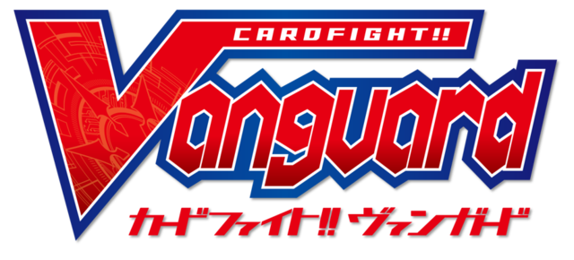

I started playing trading card games around the time Yu-gi-oh! got really popular and I haven’t stopped
since. I currently play Pokemon and Hearthstone but I’ve also played YuGiOh and Cardfight Vanguard
for years. The reason I think it’s so easy to play card games for so long is because each game
is always changing so it's hard for them to get stale. Its also easy to play for so long because
of the many ways you can enjoy card games: whether it’s just collecting, building decks, playing
with friends, or memeing on the internet about the poor game balancing.
In preparing this presentation I think I’ve managed to boil why I like card games down to 3
reasons:
For one, each card is a work of art that can be appreciated independent of the game. In pokemon specifically, there are rare full art cards that cover the entire card and can individually be worth close to 100 dollars despite not giving you a single advantage in gameplay. The art really does a lot to sell the vision of whatever deck you want to play.
The second reason is because it is really easy to make friends with people who play. For a shy person like me it can be difficult to come up with a reason to interact with new people but at card shops where they have weekly events and tournaments it’s easy to just walk up to someone and challenge them to a game. Some of the closest friends I’ve made and maintained are through the friendly competition that card games enable.
The last reason it’s my favorite hobby is because playing card games are a way to express yourself. Card games allow you to interact with opponents in interesting ways that you don’t really get to in the real world. When you build a deck to play a game, you show your personality through your decision to focus on a strategy to disrupt an opponent, or a strategy that focuses on maintaining control of the game, or a strategy that focuses on setting up clutch plays.
There are a lot of hobbies that share some of the positives I’ve talked about but I feel like card games have the perfect blend which earns them the spot as my favorite hobby.